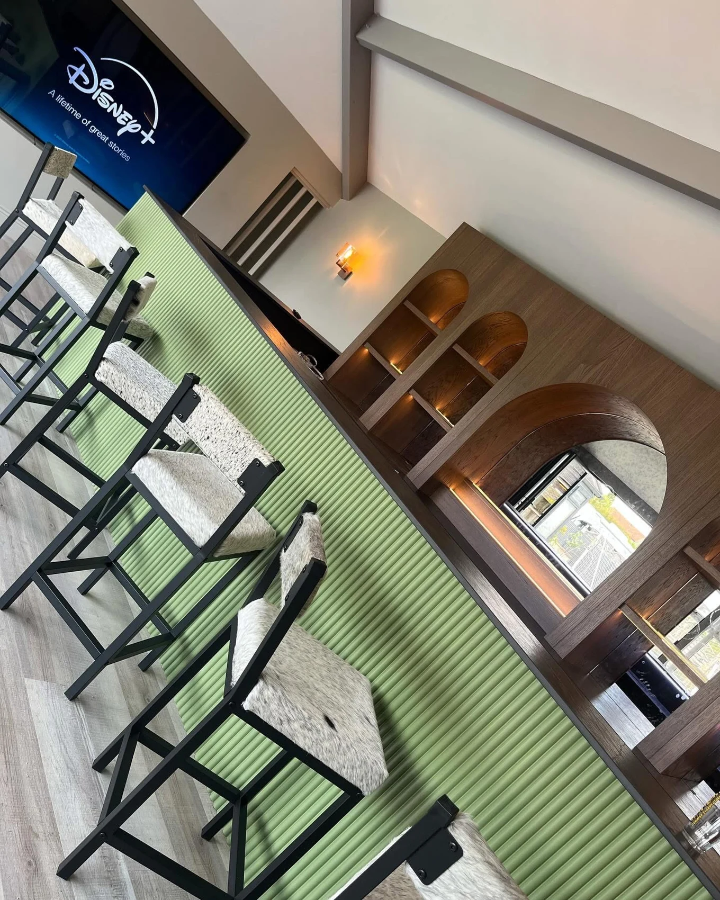
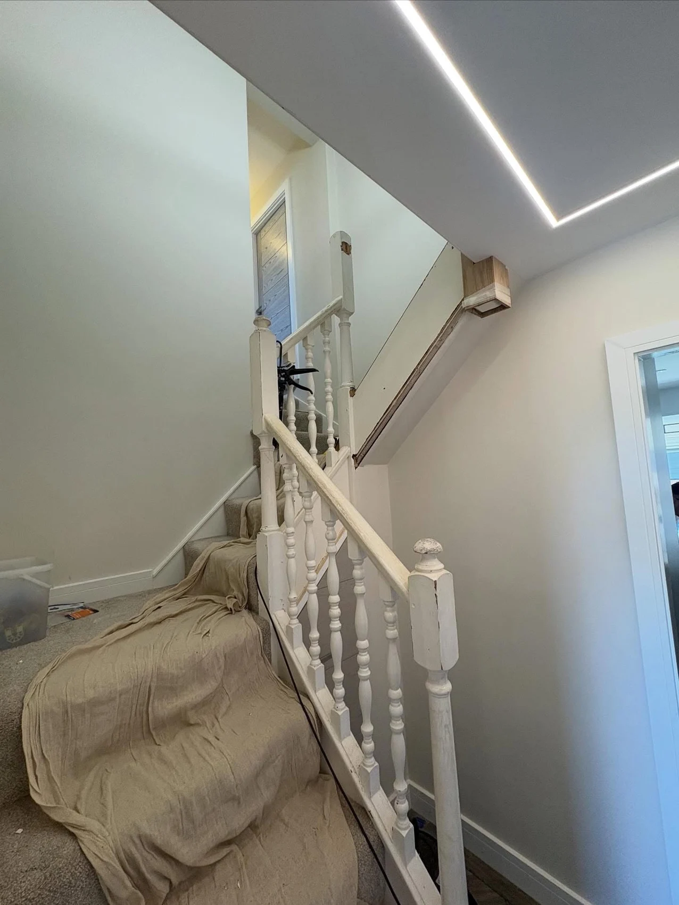
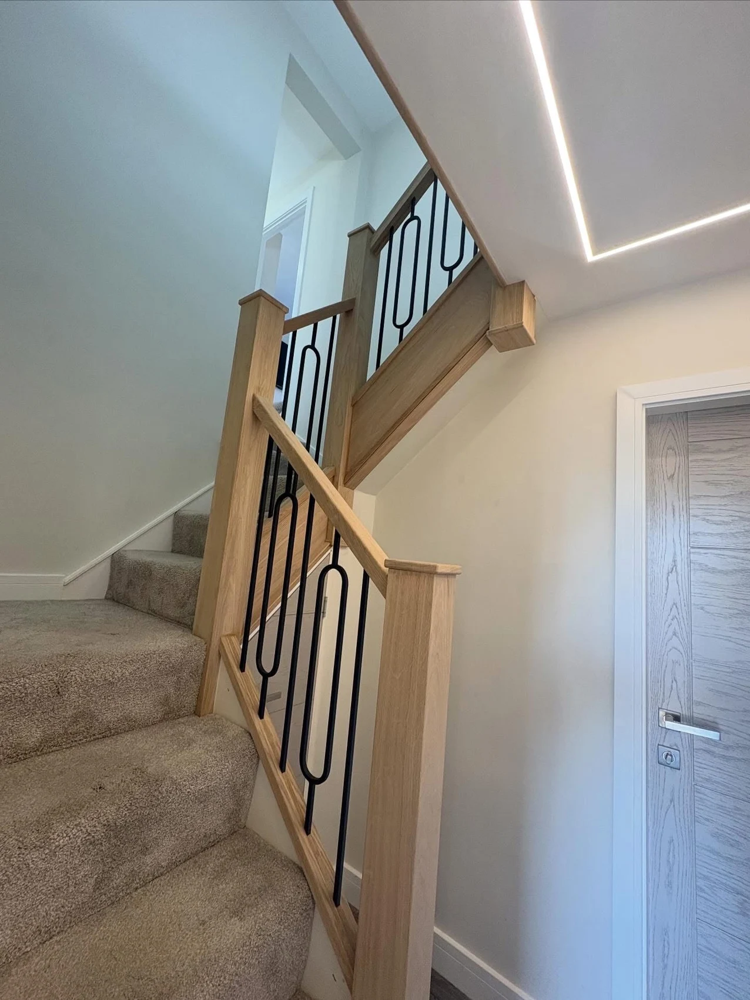

LG JOINERY · SHEFFIELD
See the details.
Picture the possibilities.
Interiors and outdoor spaces, brought together by joinery.
BEFORE & AFTER
A familiar staircase.
A different feeling.
Compare the original white balustrade with the finished oak details and decorative black metal spindles.


OUR PROJECTS
The LG Joinery collection.
Select a photograph to see the complete image.
THE DETAILS, IN MOTION
Step inside the work.
Two project videos from LG Joinery.
YOUR NEXT PROJECT
Let’s talk about your space.
From a refreshed staircase to a new garden deck, start with the details that matter to you.